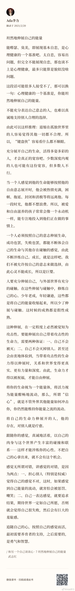

#一个人的企业#
"当一个人感觉到他的生命能够按照他的自由意志展开时，他会被热情充满，困顿、拖延、封闭和消极等将远离他。每一段时光，他都不想浪费。所以，被爱和自由滋养的孩子常常会像一个永动机一样，能专注地投入到他们正在做的事情上。"
《和另一个自己谈谈心》
"当一个人感觉到他的生命能够按照他的自由意志展开时，他会被热情充满，困顿、拖延、封闭和消极等将远离他。每一段时光，他都不想浪费。所以，被爱和自由滋养的孩子常常会像一个永动机一样，能专注地投入到他们正在做的事情上。"
《和另一个自己谈谈心》
- 